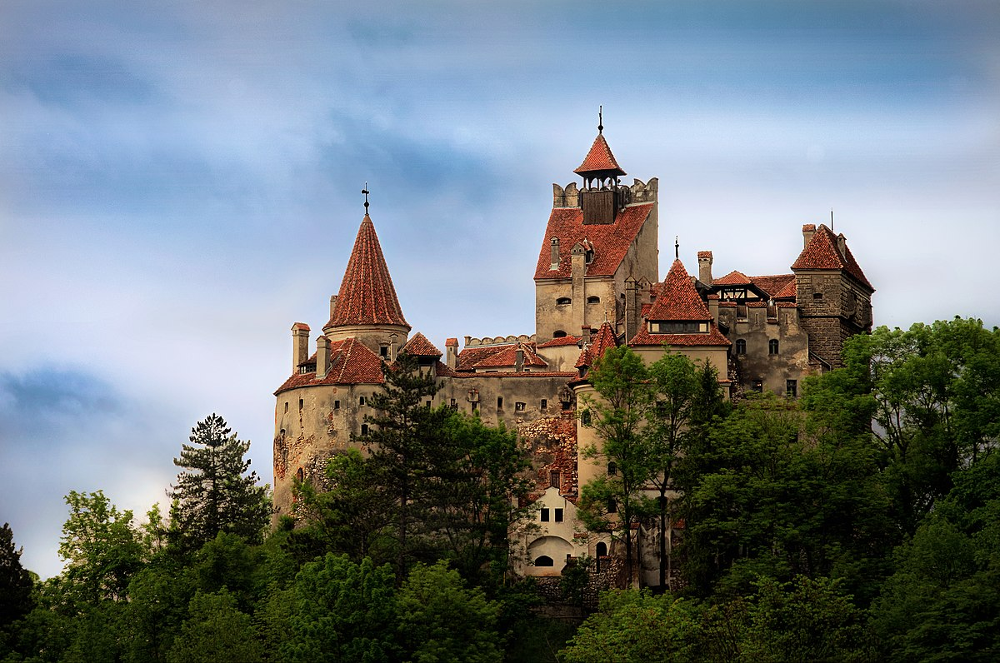

Exploring the Enigmatic Bran Castle: A Glimpse into Transylvanian History
Nestled amid the mystical landscapes of Transylvania, Bran Castle stands as a testament to centuries of history and folklore. Known by many as "Dracula's Castle," this imposing fortress has captured the imagination of travelers and storytellers alike. With its dramatic turrets and looming presence, Bran Castle beckons visitors to delve into the legends and realities that intertwine within its stone walls. In this article, we embark on a journey to unveil the captivating stories behind Bran Castle, shedding light on its rich historical tapestry and unraveling the truths and fictions that have contributed to its enduring allure.
Read More!